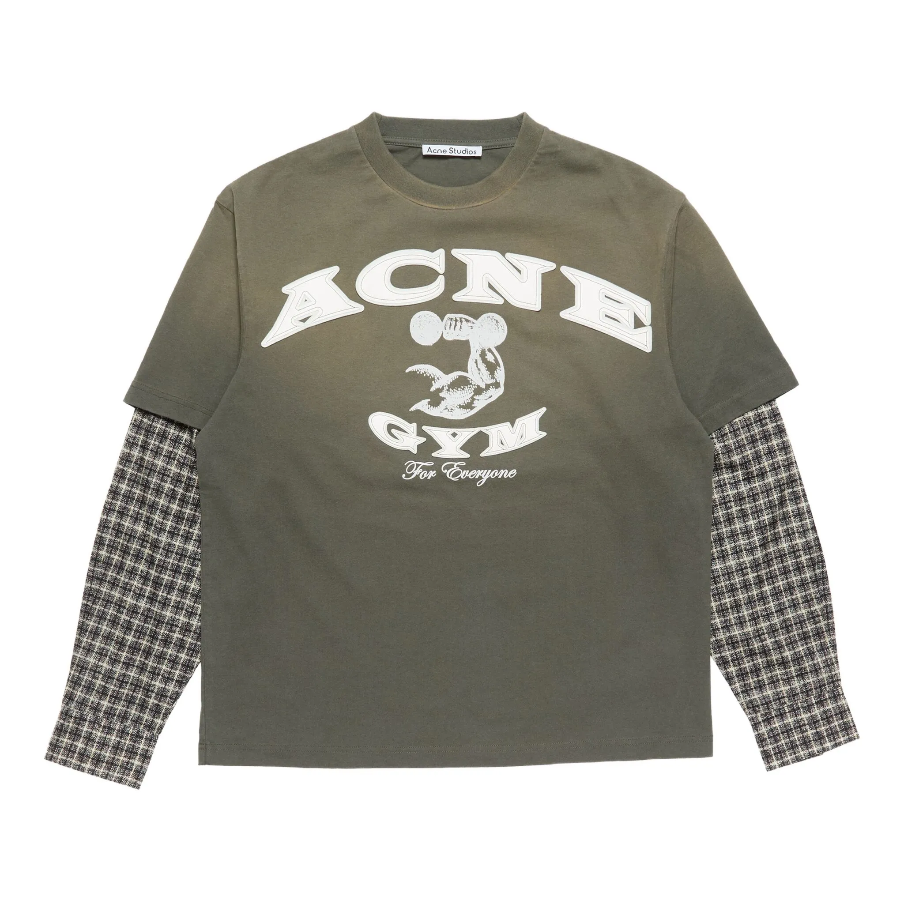
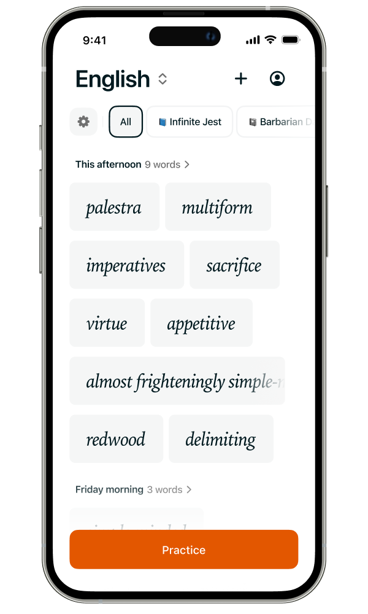
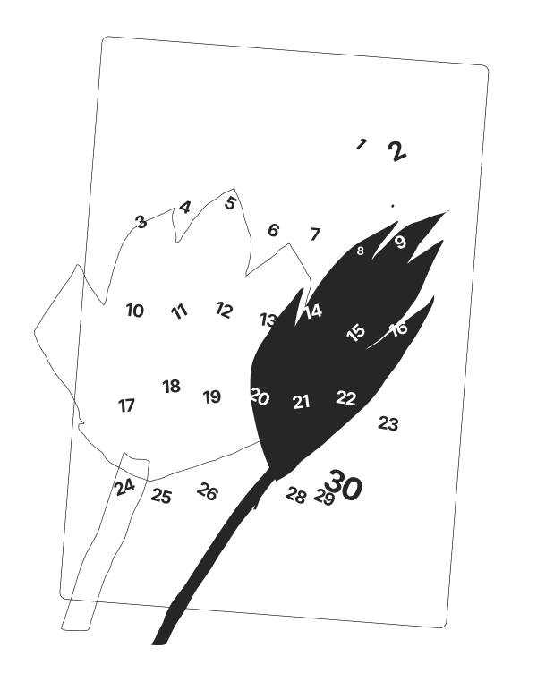

Кум
Кум

T-shirts
2023—2025

Word app
2025

Calendar
2024In Ukrainian, "Кум" (pronounced koom) traditionally refers to a godfather—specifically, the male sponsor at a child's baptism.
It can also refer to a close male friend or in-law in a spiritual or symbolic sense.
In Eastern Slavic cultures, the relationship between godparents and the child's family is considered very special and lasting.